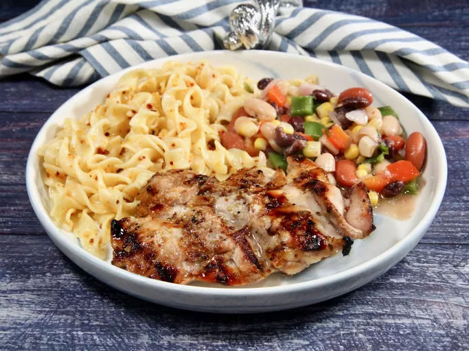

Unbelivable Chicken Recipe

Unbelivable Chicken
The usual combination of easy ingridients in this marinade for chicken
is fabulous! Everyone who tastes it asks me to share the recipe. You
will love it and the many compliments you ge -I promise!
Prep Time: 15 mins Cook Time: 20 mins
Additional Time: 8 hrs 25 mins Total Time:
9hrs Servings: 6
Ingridients
- 1/4 cup cider vinegar
- 3 tablespoons prepared coarse-ground mustard or to taste
- 3 cloves garlic, peeled and minced
- 1 lime, juiced
- 1/2 lemon, juiced
- 1/2 cup brown sugar or to taste
- 1 1/2 teaspoons salt to tast
- ground black pepper to taste
- 6 tablespoon olive oil
- 6 skinless, boneless chicken breast halves
Steps
-
Mix cider vinegar, mustard, garlic, lime juice, lemon juice,
brown sugar, salt, and pepper together in a large glass or ceramic
bowl. Whisk in olive oil. Add chicken and toss evenly to coat. Cover,
and marinate in the refrigerator for 8 hours to overnight.
-
Preheat an outdoor grill for high heat.
-
Lightly oil the grill grate. Place chicken on the preheated grill,
and cook 6 to 8 minutes per side, until juices run clear.
Discard any remaining marinade.
Home